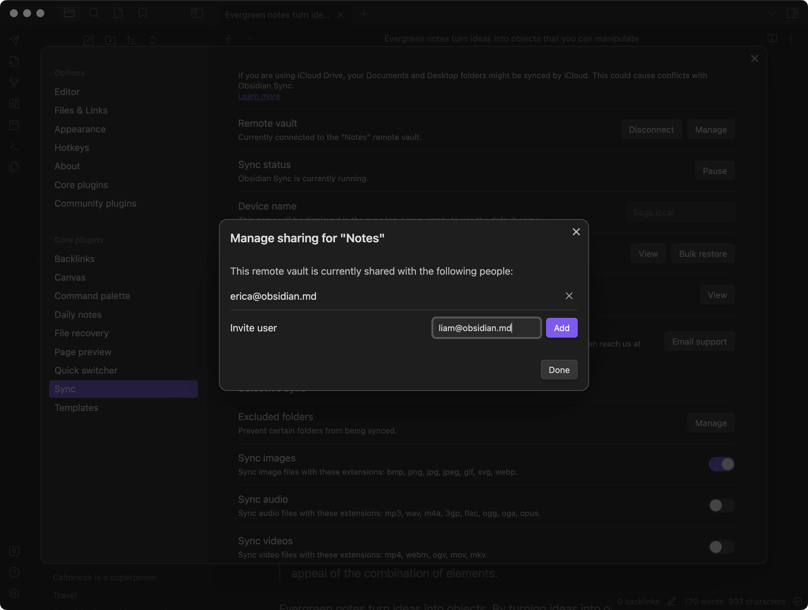

8$ Per Month
Obsidian Sync works in the background to keep your notes synchronized effortlessly and privately.
Obsidian Sync lets you decide which files and preferences you want to sync to which devices.
Invite your team to a shared Obsidian vault. Notes are updated in real-time across your team's devices without compromising the privacy of your company data.
Sync your notes across all your devices for one all-inclusive price. If you're not satisfied, get a refund within 7 days, no questions asked.